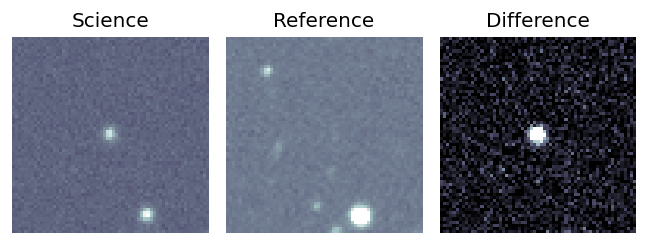
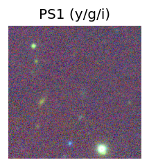
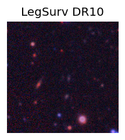
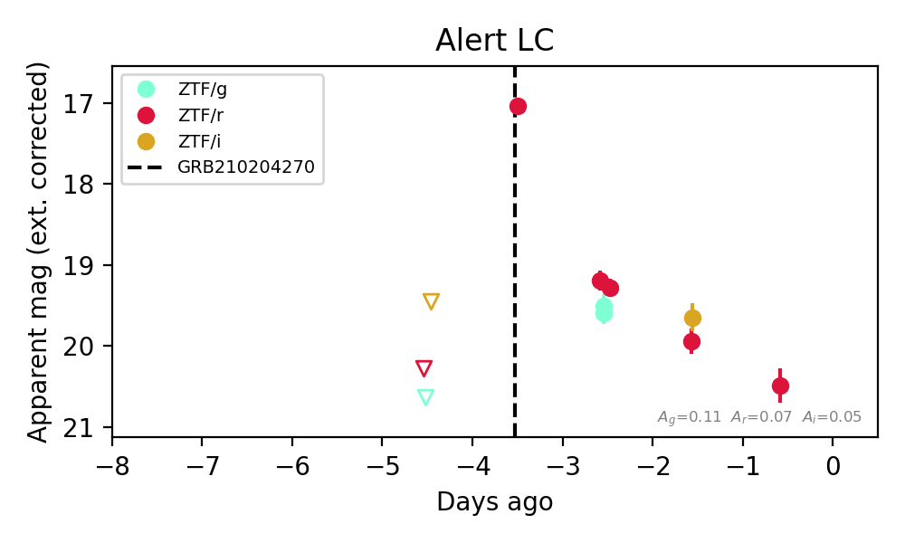
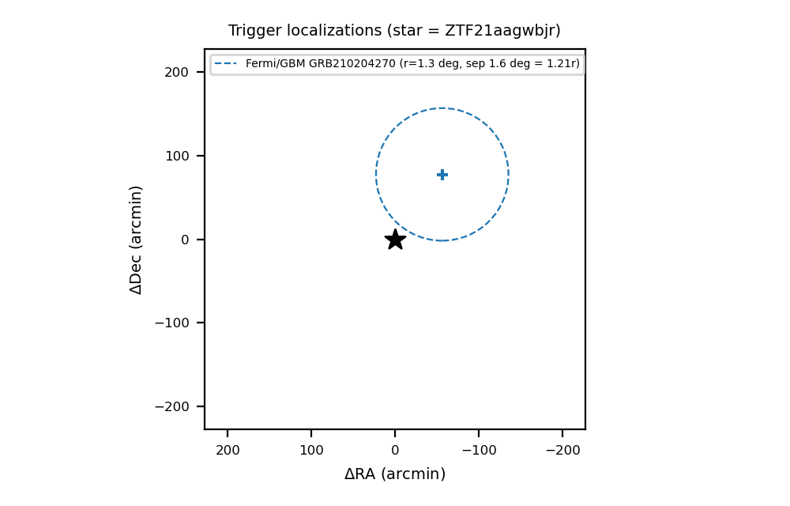

Candidate List 20210205Last night — ZTF: 1 passed basic cuts (1 young) · LSST: 0 passed basic cuts (0 young)Previous Day Next Day
Section 1: New Sources (age<1d) Section 2: Old (1-5d) sources observed last nightplaceholder
Section 2: Older Sources Observed Last Night (1)
0. [ZTF] ZTF21aagwbjr (Afterglow?FBOT?) (TNS: AT 2021buv) [Back to Top] [Share] [Trigger Swift] [Fritz Alert] [Fritz Source] [Lasair]RA, Dec: 117.08052, 11.4095 7h48m19.32s, 11d24m34.20sGalactic (l, b): 208.94344, 17.72926 ext(g-r) = 0.034Coincident trigger: Fermi/GBM GRB210204270 (r=1.3 deg, sep 1.6 deg = 1.21 r; 0.03 d before first detection)Trigger time(s) marked on the light curve; error circles in the localization panel.


TESS: Sectors [ 7 34 44 45 46 71 72]
SDSS (<15 kpc):Found SDSS phot-z: z=0.45; peak abs mag = -25.00
PS1: 0 sources in 3 arcsec
LegacySurvey: 1 sources in 3 arcsec Closest: d = 0.11 arcsec, 285.0 deg (east of north) photoz=0.71 (68% bounds 0.52, 1.02), type=REX peak abs mag (ext. corrected) = -26.21 (68% bounds -25.39, -27.17)


Extinction-corrected gr color:
From alerts: 0.31 +/- 0.13 mag
Consistent with synchrotron, g-r>0!
Rise Rate:
g: 0.56 mag/day
r: 3.1 mag/day
Fade Rate:
r: 2.23 mag/day